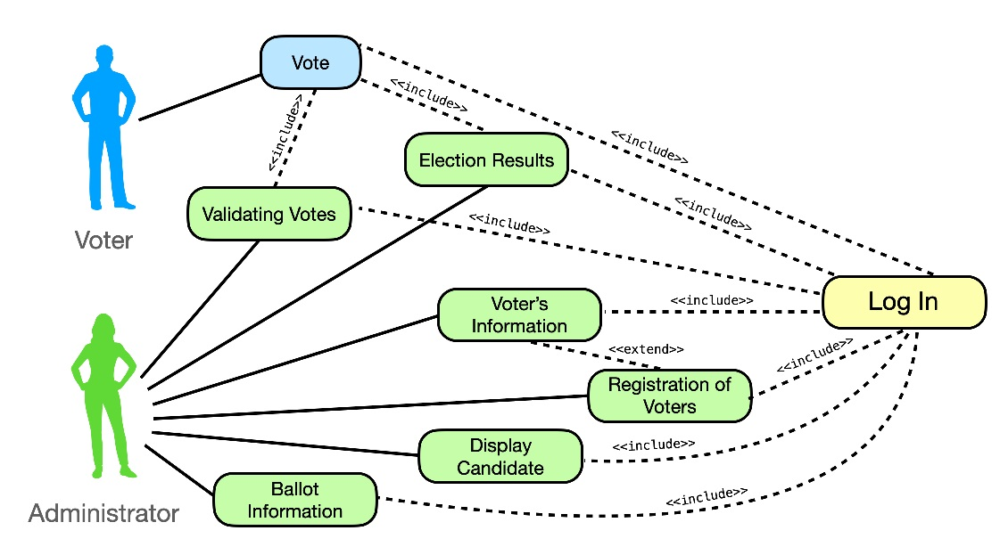

A personal project I started to learn about code optimization, code scalability, and GUI design. I used Java, CSS, and FXML and it's purpose was to simulate a colony of ants and how they use pheromones to make decisions. It started being able to simulate a few hundred ants, with a quick and rough GUI. It is now much more efficient using multithreading, faster algorithms for movement and pathfinding, and states to manage bug decision making. It is much more scalable with the use of object oriented programming. It is also a more user friendly program due to creating a clean GUI with the help of FXML. Now able to simulate tens of thousands of ants, this project has become an exciting journey of learning.

This was another fun project I worked on. It was a poker game coded with Java and CSS. The part of the project I am most proud of is the GUI. Using Javafx's panes and taking feedback from multiple iterations, I was able to create a clean and user friendly layout. I also liked the developer mode I created for the program so that we could test our logic when it came to checking if the dealt hand was a winner or not.

This was another game I created for a game development class I took. It was written in C++, using GXToolkit library. I also used Lightwave3d and Audacity for creating objects and sounds in the game. I think the most challenging part of this project was coming up with the mechanics of the zombies while working with a game loop. Creating states for the zombies to be in under certain situations is how I solved the problem. If the player is within a certain distance from a zombie, the zombie will change its desire to reach the fire to a desire to reach the player.

This was a voting system I had to create for my software engineering class. I worked with another student to create a command prompt voting system that would display a ballot and take votes which would be saved to a text file discretely. That meant that no voter information was tied to each vote, and votes would be saved to a txt file after the program closed and could be recounted when the program was reopened. My favorite parts of this project were coming up with that data persistance after program close and also coming up with how to cleanly prompt the user for information and display it in command prompt.